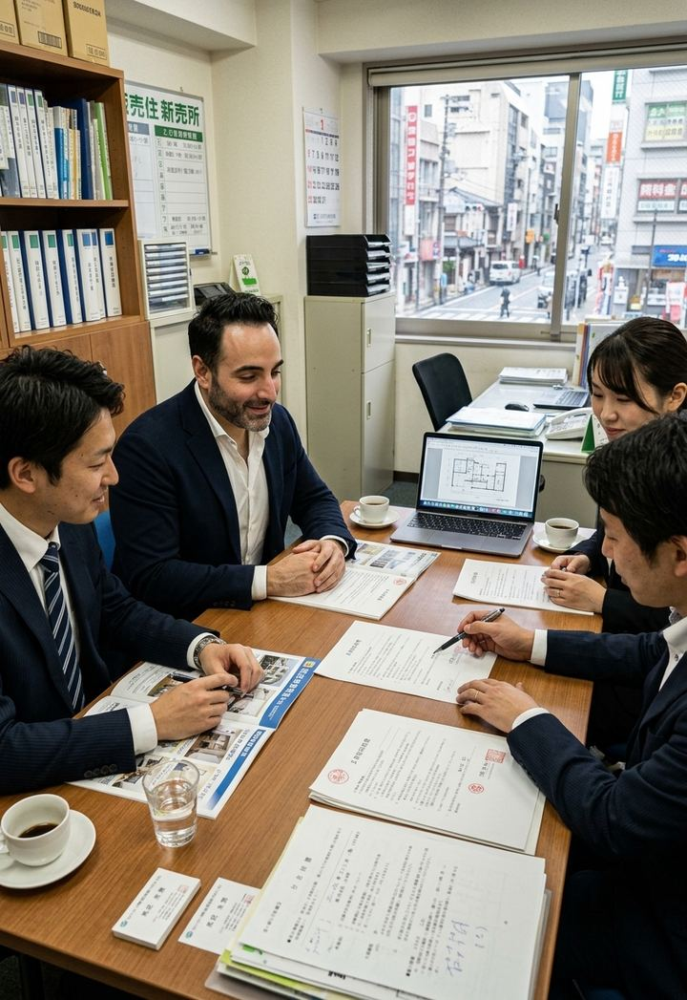

Ana sayfa / Ticari Temsilcilik
Japonya'daki tedarik ve iş bağlantılarınız için yerel bir göz, yerel bir ses.
Tedarikçi ve fabrika araştırmasından numune temini ve fuar temsilciliğine kadar Japonya'daki ticari süreçlerinizi sizin adınıza yerinde takip ediyoruz.


Üç adımda ilerliyoruz. İlk adım için hazırlık yapmanız gerekmez.
Hayır. Japon iş ortaklarınızla yazışmalarda ve görüşmelerde köprü oluyor, bilgileri sizin diline aktarıyoruz.
İhtiyacınızı alır, sipariş vermeden önce numuneleri sizin adınıza talep eder ve süreci baştan sona takip ederiz.
Fuarda firmanızı yerinde temsil eder, yaptığımız görüşmeleri ve edindiğimiz bilgileri size aktarırız.
Hayır. Kısaca ne aradığınızı anlatmanız yeterli; gerisini görüşmede birlikte netleştiririz.
Kısaca ihtiyacınızı yazın ya da yüz yüze görüşme için randevu alın. Gerisini birlikte netleştiririz.